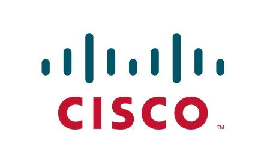
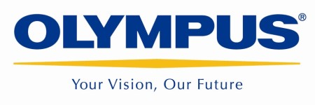

홈 > 브랜드 매거진 > Saturn
Saturn
Saturn는 독일의 기술·전자 브랜드로, 제품, 아이덴티티, 유통, 시장 포지션을 함께 읽어야 하는 영역입니다.
산업 분야 기술·전자 · 공개 등급 자료 기반 · 브랜드 평가 4.1 ★

한눈에 보는 브랜드
Saturn는 독일 기반의 기술·전자 브랜드입니다. 제품, 아이덴티티, 유통, 시장 포지션을 함께 읽어야 하는 영역으로 분류되며, 브랜드명과 업종, 운영 국가, 공개 로고 여부를 함께 보며 사전 항목의 기본 맥락을 확인할 수 있습니다.
브랜드 관점
Saturn 항목은 단순한 이름 목록이 아니라 기술·전자 시장 안에서 어떤 역할을 하는지 읽기 위한 기준점입니다. 제품·서비스 범위, 유통 방식, 시각 아이덴티티, 시장 포지션을 함께 비교하면 같은 산업의 다른 브랜드와 차이가 선명해집니다.
브랜드 아이덴티티
Saturn의 아이덴티티는 브랜드명, 로고 사용 여부, 업종 언어, 국가적 배경을 중심으로 정리됩니다. 대표 로고 자산이 연결되어 있어 시각 식별자를 함께 검토할 수 있습니다.
제품과 서비스
Saturn의 제품과 서비스는 기술·전자 범주에서 해석됩니다. 이 섹션은 상품군, 서비스 방식, 판매 채널, 사용 장면을 분리해 추적하기 위한 기본 설명이며, 추가 자료가 확보되면 대표 제품과 가격대, 시장별 차이까지 확장할 수 있습니다.
현재 상태
타임라인
정리된 연도형 이벤트가 없습니다.
BI/CI 변천사
함께 읽을 브랜드

기술·전자 · 편집 검수시스코시스코는 미국의 기술·전자 브랜드로, 제품, 아이덴티티, 유통, 시장 포지션을 함께 읽어야 하는 영역입니다.

기술·전자 · 편집 검수올림푸스올림푸스는 기술·전자 브랜드로, 제품, 아이덴티티, 유통, 시장 포지션을 함께 읽어야 하는 영역입니다.
 기술·전자 · 편집 검수제록스
기술·전자 · 편집 검수제록스제록스는 미국의 기술·전자 브랜드로, 제품, 아이덴티티, 유통, 시장 포지션을 함께 읽어야 하는 영역입니다.
 기술·전자 · 편집 검수페덱스
기술·전자 · 편집 검수페덱스페덱스는 미국, 캐나다의 기술·전자 브랜드로, 제품, 아이덴티티, 유통, 시장 포지션을 함께 읽어야 하는 영역입니다.
 기술·전자 · 자료 기반지멘스
기술·전자 · 자료 기반지멘스지멘스는 독일의 기술·전자 브랜드로, 제품, 아이덴티티, 유통, 시장 포지션을 함께 읽어야 하는 영역입니다.
Escom는 독일의 기술·전자 브랜드로, 제품, 아이덴티티, 유통, 시장 포지션을 함께 읽어야 하는 영역입니다.
 기술·전자 · 자료 기반SK텔레콤
기술·전자 · 자료 기반SK텔레콤SK텔레콤는 대한민국의 기술·전자 브랜드로, 제품, 아이덴티티, 유통, 시장 포지션을 함께 읽어야 하는 영역입니다.
 기술·전자 · 자료 기반버라이즌 와이어리스
기술·전자 · 자료 기반버라이즌 와이어리스버라이즌 와이어리스는 미국의 기술·전자 브랜드로, 제품, 아이덴티티, 유통, 시장 포지션을 함께 읽어야 하는 영역입니다.